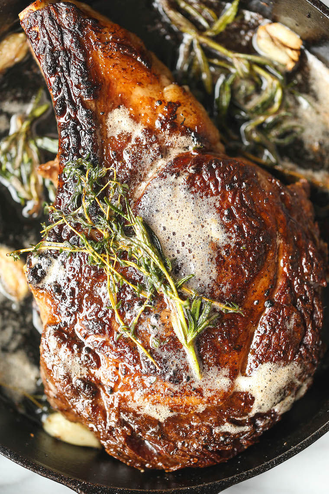

Steak

Description
Few things are more delightful and universally loved in the culinary world, than
a beautiful, juicy, well-marbled ribeye steak. In this recipe, we will take you through
all the steps required in bringing the steakhouse to your own home!
Ingredients
- 1 (24-ounce) bone-in ribeye steak, 2-inch-thick, at room temperature
- Kosher salt and freshly ground black pepper, to taste
- 1 tbsp high smoke point oil, such as vegetable, ghee, or grapeseed
- 3 tbsp unsalted butter
- 3 cloves garlic, smashed
- 3 sprigs fresh thyme
- 2 sprigs fresh rosemary
Steps
- Using paper towels, pat both sides of the steak dry;
season generously with 1 1/4 teaspoons salt and 1/2 teaspoon pepper.
- Heat a medium cast iron skillet over medium high heat until very hot,
about 1-2 minutes; add canola oil.
- Place the steak in the middle of the skillet and cook, turning every 2-3 minutes,
until a dark crust has formed on both sides, about 12-14 minutes.
- Reduce heat to medium low. Push steak to one side of the skillet;
add butter, garlic, thyme and rosemary to opposite side of the skillet, tilting the skillet towards
the butter and cooking until butter is foaming, about 30 seconds to 1 minute.
- Working carefully, spoon butter over steak for 1-2 minutes, turning over once, until it reaches an internal temperature of
120 degrees F for medium rare, or until desired doneness.
Let rest 15 minutes before slicing.
- Serve immediately.